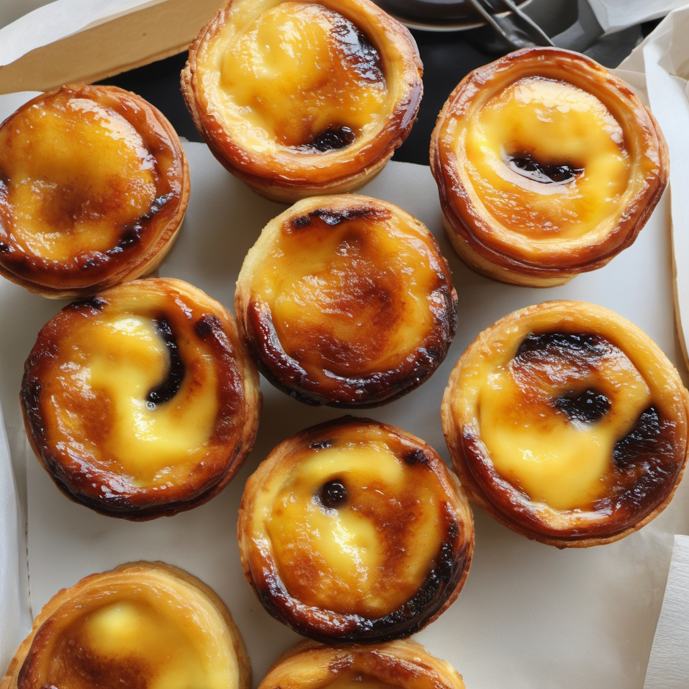
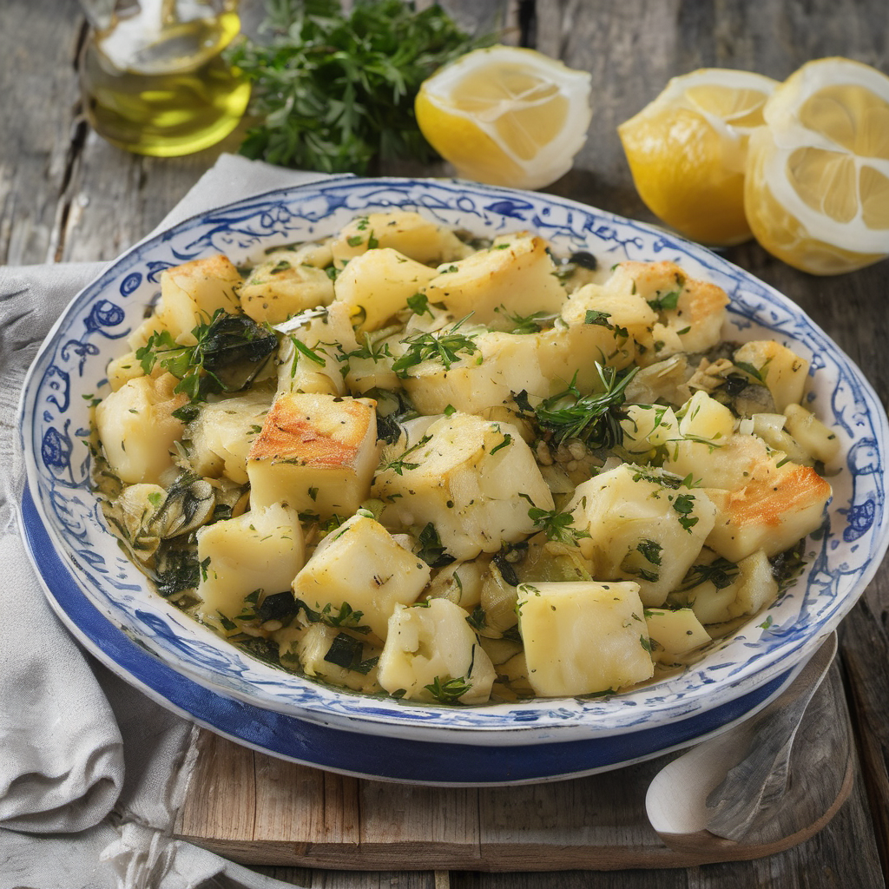
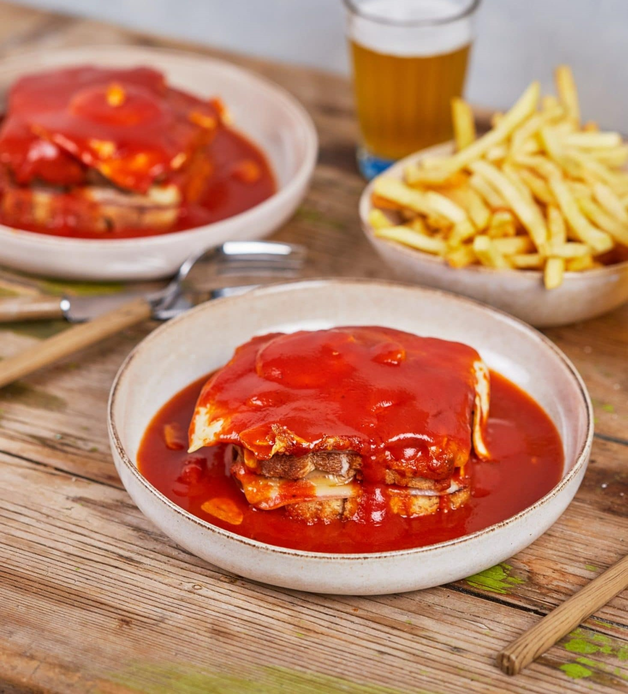
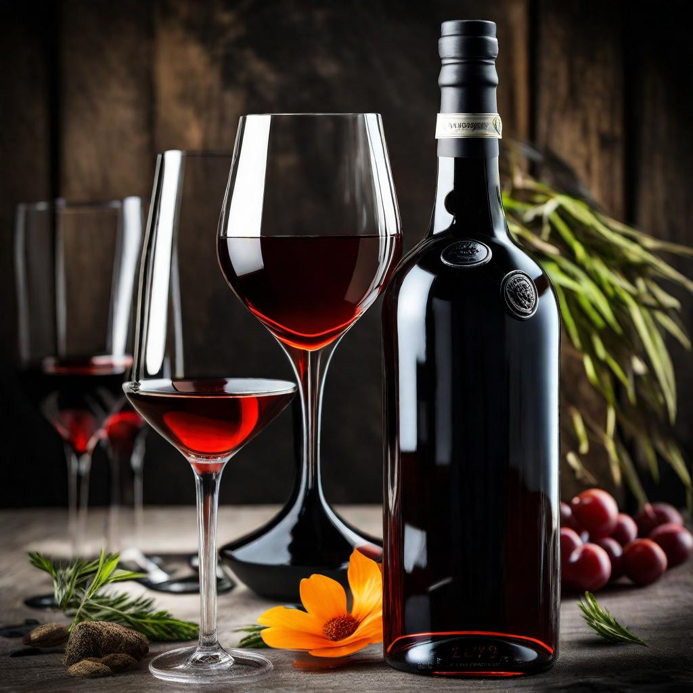

A tengertől a világhírű süteményekig
A portugál konyha olyan ételeket kínál, melyek tükrözik az ország gazdag tengeri hagyományait,
az évszázadok óta tartó kapcsolatot az óvilággal, valamint a helyi, friss alapanyagok kiemelkedő jelentőségét.
Az étkezésekhez kapcsolódó hagyományok, mint a családi összejövetelek és a hétvégi ebédek, szintén fontos részét
képezik a portugál kultúrának.
A képekre kattintva minden finomsághoz található egy recept!
Pastel de Nata

A portugál édesség világhírű, egy kis, krémes kelt tészta, melyet vaníliakrém tölt meg. A tetejét finomra porcukrozva
vagy fahéjjal megszórva szolgálják fel. A pastel de nata sok helyen, például kávézókban és pékségekben is megtalálható.
A pastel de nata története a 18. századra nyúlik vissza, egy lisszaboni kolostorban készítették először.
Sokáig féltve őrizték a receptjét. Az alapja lehet házi vagy bolti leveles tészta, a töltelék pedig lágy vaníliás krém.
Eredetileg nagyon magas hőfokon sütötték,
hogy a belseje gyorsan megszilárduljon. Muffinsütőben egyszerűen elkészíthető, és nagyon mutatós lesz.
Elkészítési idő: 30 perc
Bacalhau á Brás

A Bacalhau à Brás egy portugál étel, amelyet sózott tőkehal, hagyma és vékonyra vágott sült burgonya reszelékből készítenek,
mindezt rántottával megkötve. Általában fekete olajbogyóval díszítik, és friss petrezselyemmel szórják meg. Ez a híres portugál étel tőkehalból készül.
A bacalhau (tőkehal) egyik legnépszerűbb változata, apróra vágva, hagymával,
burgonyával és petrezselyemmel keverve, tojással sütve. Ízletes és laktató fogás, mely gyakran a hétvégi ebédek része.
Elkészítési idő: 1 óra
Francesinha

Ez egy húsos szendvics, mely Portugália északi részéről származik,
különlegessége a piri-piri szószban fürödő, többféle húst tartalmazó töltelék.
A szendvicset sajttal borítják, majd szaftban sütik.
Elkészítési idő: 1,5 óra
Portói bor

A portói bor, más néven portó, Portugália északi részéről, különösen a Douro-völgy területéről származó édes vörösbor.
Ez a híres és egyedülálló bor készítési folyamatának és karakterisztikáinak köszönhetően szerte a világon elismert és kedvelt.
A portói bort két fő típusba sorolják: tawny és ruby. A tawny portó hosszabb érlelésen megy keresztül, így könnyedebb és árnyaltabb ízű lesz.
A ruby portó viszont fiatalabban kerül palackba, így friss és gyümölcsös ízjegyekkel rendelkezik
A portói bor hagyományos és egyedi ital, amely a Douro-völgy területének egyedi adottságaitól és a portugál borászati hagyományoktól kölcsönzi jellegzetes
ízét és karakterét.
Néhány a leghíresebb portói pincészetek közül: